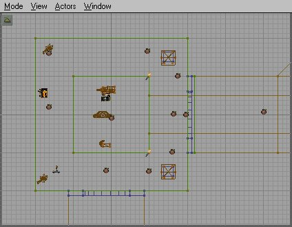
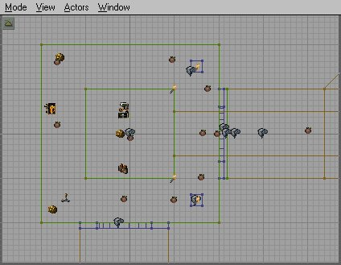
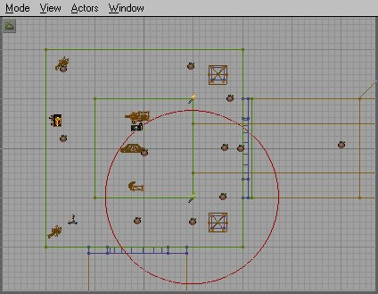
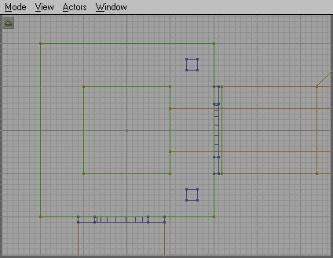

|  | This is the default view. It will show each actors unique icon and meshes for actors that have them |
|  | This view will show all actors as generic icons. |
|  | This view will show the radius of the selected actor. It helps for setting the collision radius of triggers, and the light radius of lights. But that's another tutorial :) |
|  | This view hides all actors, showing only the brushes. |